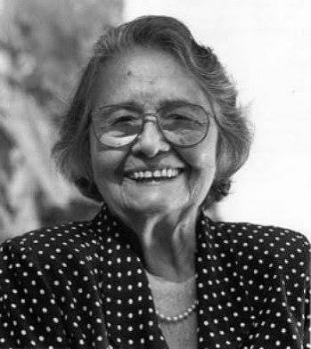

Rachel de Queiroz foi uma importante escritora, jornalista e cronista brasileira, nascida em Fortaleza, no Ceará,
em 17 de novembro de 1910, e falecida no Rio de Janeiro, em 2003.
Ela ficou conhecida principalmente pelo romance O Quinze, publicado em 1930, quando tinha apenas 20 anos. A obra
retrata os efeitos da seca de 1915 no Ceará, mostrando a pobreza, a fome e as dificuldades enfrentadas pelos
sertanejos. O livro teve grande repercussão e marcou a literatura regionalista brasileira.
Rachel também escreveu obras como João Miguel, As Três Marias, Dôra, Doralina e Memorial de Maria Moura, além de
milhares de crônicas, peças de teatro e textos para jornais e revistas.
Um fato muito importante de sua trajetória é que, em 1977, ela se tornou a primeira mulher eleita para a
Academia Brasileira de Letras, ocupando a cadeira nº 5.
Em resumo: Rachel de Queiroz foi uma das grandes escritoras brasileiras do século XX e destacou-se por retratar
o Nordeste, a seca, a vida sertaneja e as relações humanas de maneira realista e marcante.